F4L5J o meglio Cambino Panino è un designer con diversi stili. I titoli attribuibili sarebbero diversi come designer, web designer, web old-owl
Il significato è ancora sconosciuto alla scienza ma si sa che il nome precendente era RDG (re dei games). Attualmente è F4L5J o più corretto in fonetica /fàle/ o /fàlej/
È specializzato in video brevi e in fatto di stili soprattutto minimal con one color design
Per richieste professionali, commerciali o dubbi: f4l5jproject@gmail.com